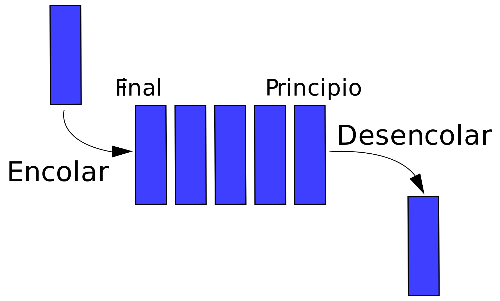
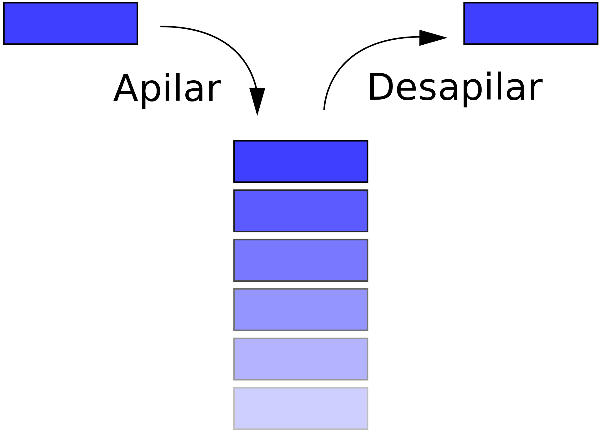
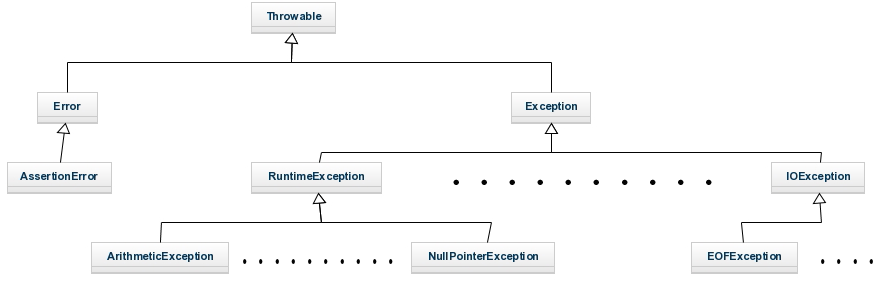
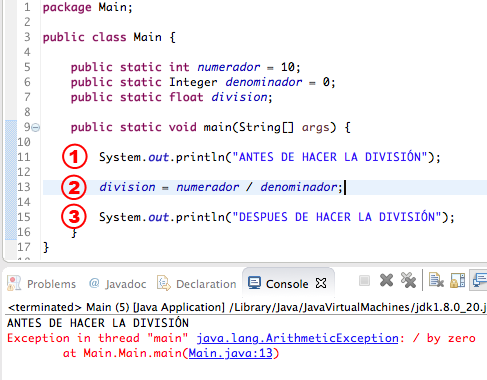
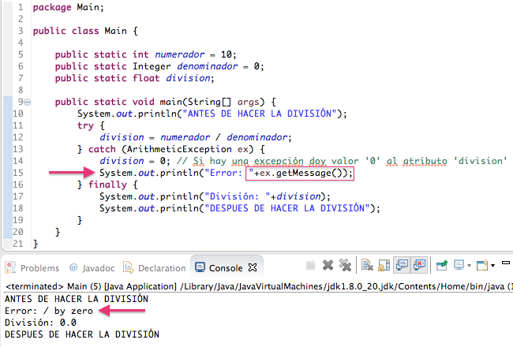
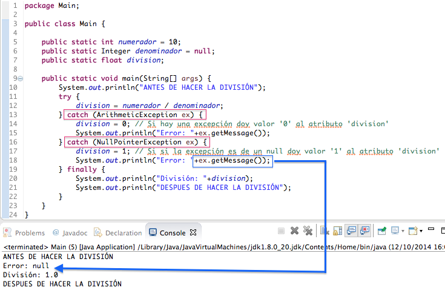

Unidad 5 - Estructura de datos dinámicas1. Introducción2. Colecciones2.1. Interfaz básica2.2. Elegir una colección3. Listas3.1. Métodos3.2. Uso de listas3.3. Otros tipos de listasArrayList vs. LinkedListCómo funciona ArrayListCómo funciona LinkedListMétodos de LinkedList3.4 Java List Sorting4. Java HashMap4.1 Recorrer un HashMap en bucle4.2 Otros tipos5. Java HashSet6. Trabajando con colecciones6.1. Clases Wrapper o envoltorio.6.1.1. Introducción6.1.2. Métodos más usados.6.1.3. Manejando las colecciones.6.1.4.- Leer datos según un patrón6.2.- Recorrer una colección6.2.1.- Bucle for-each6.2.2.- Iteradores.6.2.3.- ListIterator vs Iterator.Anexo I.- Introducción a las excepcionesAnexo II.- Manejo de fechasComparar objetos Date: compareTo.Formatear una fecha: format.Convertir un String a Date: parse.Anexo III: Formato decimal en JavaRedondear decimales, por ejemplo, dos decimalesMostrar porcentajesRedondeo al fijar el número de decimalesPuntos decimales y separador de miles : DecimalFormatSymbolsReconstruir el númeroAnexo IV.- Expresiones regularesUso de expresiones regulares IUso de expresiones regulares II

| Fecha | Versión | Descripción |
|---|---|---|
| 15/10/2021 | 1.0.0 | Versión inicial |
| 01/12/2021 | 1.0.1 | Corrección de errores |
| 03/12/2021 | 1.0.2 | Cierre de tema |
| 03/12/2021 | 1.0.3 | Se añade ListIterator |
| 17/12/2024 | 2.0.0 | Se añaden nuevas estructuras |
Unidad 5 - Estructura de datos dinámicas
1. Introducción
Cuando el volumen de datos a manejar por una aplicación es elevado, no basta con utilizar variables. Manejar los datos de un único pedido en una aplicación puede ser relativamente sencillo, pues un pedido está compuesto por una serie de datos y eso simplemente se traduce en varias variables. Pero, ¿qué ocurre cuando en una aplicación tenemos que gestionar varios pedidos a la vez?
Lo mismo ocurre en otros casos. Para poder realizar ciertas aplicaciones se necesita poder manejar datos que van más allá de meros datos simples (números y letras). A veces, los datos que tiene que manejar la aplicación son datos compuestos, es decir, datos que están compuestos a su vez de varios datos más simples. Por ejemplo, un pedido está compuesto por varios datos, los datos podrían ser el cliente que hace el pedido, la dirección de entrega, la fecha requerida de entrega y los artículos del pedido.
Ya hemos trabajo con arrays, pero, a veces, los datos tienen estructuras aún más complejas, y son necesarias soluciones adicionales.
En esta UD aprenderemos esas soluciones adicionales que consisten básicamente en la capacidad de poder manejar varios datos del mismo o diferente tipo de forma dinámica y flexible. Aunque hablaremos de diferentes estructuras de datos dinámicas, nos centraremos en manejar las listas y en concretos los ArrayLists.
2. Colecciones
El manejo de las estructuras de datos dinámicas es una tarea muy importante en el desarrollo de software. Sin embargo, su manejo, creando y manipulando directamente sus elementos y las referencias a ellos, podría considerarse un trabajo de bajo nivel.
Java incluye un conjunto de interfaces y clases genéricas, conocido como el Java Collection Framework (marco de trabajo de colecciones de Java), el cuál contiene estructuras de datos, interfaces y algoritmos pre empaquetados para manipular estructuras de datos tales como listas, pilas, colas, conjuntos y mapas clave – valor. Podríamos considerarlo como la librería de las estructuras dinámicas.
Las colecciones definen un conjunto de interfaces, clases genéricas y algoritmos que permiten manejar grupos de objetos, todo ello enfocado a potenciar la reusabilidad del software y facilitar las tareas de programación. Parecerá increíble el tiempo que se ahorra empleando colecciones y cómo se reduce la complejidad del software usándolas adecuadamente. Las colecciones permiten almacenar y manipular grupos de objetos que, a priori, están relacionados entre sí (aunque no es obligatorio que estén relacionados, lo lógico es que si se almacenan juntos es porque tienen alguna relación entre sí), pudiendo trabajar con cualquier tipo de objeto.
Collection es la interfaz raíz en la jerarquía de colecciones. Es decir, define los métodos básicos que permitirán manejar todos los tipos de colecciones. A partir de Collection se derivan otras estructuras de datos como:
List: define una colección que puede contener elementos duplicados.
Set: define una colección que no puede contener duplicados
Map: define una colección que asocia claves con valores y no puede contener claves duplicadas.
De estas a su vez se derivan otras pero como se ha dicho todas ellas compartirán los métodos definidos en la estructura Collection que explican a continuación.
2.1. Interfaz básica
Las colecciones en Java parten de una serie de interfaces básicas. Cada interfaz define un modelo de colección y las operaciones que se pueden llevar a cabo sobre los datos almacenados, por lo que es necesario conocerlas.
La interfaz inicial, a través de la cual se han construido el resto de colecciones, es la interfaz java.util.Collection, que define las operaciones comunes a todas las colecciones derivadas.
A continuación se muestran las operaciones más importantes definidas por esta interfaz. Ten en cuenta que Collection es una interfaz genérica donde la letra E se utiliza para representar cualquier clase y al utilizarse se deberá sustituir por una clase concreta.
| Método | Descripción |
|---|---|
| int size() | Devuelve el número de elementos de la colección. |
| boolean isEmpty() | Devuelve true si la colección está vacía. |
| boolean contains(Object objeto) | Devuelve true si la colección tiene el elemento pasado como parámetro. |
| boolean add(E elemento) | Permitirá añadir elementos a la colección. Devuelve true si se añade correctamente. |
| boolean remove(Object objeto) | Permitirá eliminar elementos de la colección. Devuelve true si se borra correctamente. |
| Iterator | Permitirá crear un iterador para recorrer los elementos de la colección. Esto se ve más adelante, no te preocupes. |
| Object[] toArray() | Permite pasar la colección a un array de objetos tipo Object |
| void clear() | Vacía la colección |
En todos los tipos de colecciones en Java dispondremos de estos métodos comunes más otros particulares dependiendo de sus funcionalidades. Más adelante veremos como se usan estos métodos.
2.2. Elegir una colección
En esta parte nos centraremos en trabajar con la colección ArrayList.
Sin embargo, cuando vayamos a desarrollar una nueva aplicación es importante tener en cuenta los siguientes puntos:
¿Qué información queremos guardar?
¿Puede haber datos repetidos?
¿Es importante que los datos estén ordenados?
En función de las respuestas que demos, existirán colecciones que debido a su estructura y funcionamiento interno, serán más eficientes que otras y deberemos tenerlo en cuenta.
3. Listas
Las listas son una estructura de datos que nos recuerdan a los arrays pero que proporcionan mayor flexibilidad ya que podemos añadir y eliminar elementos sin preocuparnos por el tamaño de la lista. La lista crece según añadimos elementos y se reduce cuando los eliminarnos sin que nosotros tengamos que hacer nada al respecto. De echo, las listas son una de las estructuras de datos fundamentales que te vas ha encontrar en programación.
Sus características son las siguientes:
Pueden almacenar elementos duplicados. Si no queremos duplicados, hay que verificar manualmente que el elemento no esté en la lista antes de su inserción.
Permiten acceso posicional. Es decir, podemos acceder a un elemento indicando su posición en la lista.
Es posible buscar elementos en la lista y obtener su posición.
Es posible la extracción de sublistas. Es decir se puede obtener una lista que contenga solo una parte de los elementos de forma muy sencilla.
Para ello, además de los métodos heredados de Collection, añade métodos que permiten esas funcionalidades.
Dentro de las listas podemos encontrar ArrayList y LinkedList. Las 2 son muy parecidas de manejar estando su diferencia en la estructura y funcionamiento interno. Cuando la lista vaya a cambiar frecuentemente, es decir cuando tengamos que introducir elementos nuevos y borrar otros de forma habitual, las LinkedList serán más eficientes. Para la mayoría de las soluciones sin embargo, los ArrayLists son suficientes y por ello vamos a centrar esta UD en su manejo.
3.1. Métodos
En Java, para las listas se dispone de una interfaz llamada java.util.List, y dos implementaciones básicas, java.util.LinkedList y java.util.ArrayList, con diferencias significativas entre ellas.
Los métodos de la interfaz List, que obviamente estarán en todas las implementaciones, y que permiten las operaciones anteriores son:
| Método | Descripción |
|---|---|
| E get(int index) | Permite obtener un elemento partiendo de su posición (index). |
| E set(int index, E element) | Permite cambiar el elemento almacenado en una posición de la lista (index), por otro (element). |
| void add(int index, E element) | Otra versión del método add. Inserta un elemento (element) en la lista en una posición concreta (index), desplazando los elementos siguientes. |
| E remove(int index) | Otra versión del método remove. Elimina un elemento indicando su posición (index) en la lista. |
| boolean add(E element) | Añade un elmento al final de la lista |
| void clear() | Elimina todos los elementos de la lista |
| int size() | Devuelve el número de elementos de una lista |
| String toString() | Devuelve los elementos de una lista formateados como los arrays: ["hola", "kaixo", "agur", "adios"] |
| Object[] toArray() | Devuelve un array con los elementos de la lista en el mismo orden. |
Fíjate que las listas conservan los métodos de las colecciones (add, clear, size...) y de la clase Object (toString) y añade otras más para posibilitar las funcionalidades descritas.
Al igual que los arrays, los elementos de una lista empiezan a numerarse por 0. Es decir, que el primer elemento de la lista es el 0.
Recuerda también que List es una interfaz genérica, podemos crear listas con elementos de cualquier clase, por lo que <E> se corresponderá con la clase usada para crear esa lista.
Hay otros métodos que para funcionar correctamente necesitan encontrar un elemento en la lista. Funcionan con los tipos básicos, enteros, double, String.. pero no con el resto de objetos:
| Método | Descripción |
|---|---|
| E remove(Object o) | Elimina un elemento indicando de la lista. |
| int indexOf(Object o) | Permite conocer la primera aparición (índice) de un elemento. Si dicho elemento no está en la lista retornará -1. |
| boolean contains(Object o) | Devuelve true si el objeto indicado está en la lista, false en caso contrario |
| int lastIndexOf(Object o) | Permite conocer la última aparición (índice) de un elemento. Si dicho elemento no está en la lista retornará -1. |
3.2. Uso de listas
Pues para usar una lista haremos uso de su implementación ArrayList. El siguiente ejemplo muestra como usar un ArrayList pero valdría también para LinkedList.
No olvides importar las clases java.util.LinkedList y java.util.ArrayList según sea necesario para poder utilizar estas clases.
En este ejemplo se usan los métodos de acceso posicional a la lista:
xArrayList<String> t = new ArrayList<String>(); // Crea un ArrayList de cadenas de caracteres.t.add("hola"); // Añade el valor "hola" al final de la lista.t.add("Agur"); // Añade "Agur" al final de la lista.t.add(1, "Adios"); // Añade "Adios" en la posición 1 de la lista (la segunda).t.remove(0); // Elimina el primer elementos de la lista.t.set(1, "kaixo"); // Modifica el valor del elemento 1
// Muestra los elementos de la lista.for (int i = 0; i < t.size(); i++) { System.out.println("Elemento:" + t.get(i));}
t.set(t.indexOf("kaixo"), "Agur"); // Busca el elemento "kaixo" y lo sustituye por "Agur".
// Muestra los elementos de la lista mediante el método toString de las clasesSystem.out.println(t);La lista ArrayList
Fíjate que nunca podemos declarar algo de la clase ArrayList
En el ejemplo anterior, se realizan muchas operaciones, ¿cuál será el contenido de la lista al final? Pues será "Adios" y "Agur".
3.3. Otros tipos de listas
¿Y en qué se diferencia una LinkedList de una ArrayList? Los LinkedList utilizan listas doblemente enlazadas.
Las listas enlazadas sus elementos se encapsulan en los llamados nodos. Los nodos van enlazados unos a otros para no perder el orden y no limitar el tamaño de almacenamiento. Cuando queremos añadir un elemento al final solo tenemos que enlazarlo al último elemento. Para eliminar un elemento de una lista, solo hay que "puentearlo". Es decir, hay que cambiar el enlace del elemento anterior para que conecte directamente con el siguiente, dejando el elemento a borrar fuera de la lista.
Tener un doble enlace significa que en cada nodo se almacena la información de cuál es el siguiente nodo y también, información de cuál es el nodo anterior. Si un nodo no tiene nodo siguiente o nodo anterior, se almacena null para ambos casos.
En el caso de los ArrayList, éstos se implementan utilizando arrays que se van redimensionando conforme se necesita más espacio o menos. La redimensión es transparente a nosotros, no nos enteramos cuando se produce, pero eso redunda en una diferencia de rendimiento notable dependiendo del uso.
Los ArrayList son más rápidos en cuanto a acceso a los elementos. Acceder a un elemento según su posición es más rápido en un array que en una lista doblemente enlazada que exige recorrer la lista. En cambio, eliminar un elemento implica muchas más operaciones en un array que en una lista enlazada de cualquier tipo.
¿Y esto que quiere decir? Que si se van a realizar muchas operaciones de eliminación de elementos sobre la lista, conviene usar una lista enlazada (LinkedList), pero si no se van a realizar muchas eliminaciones, sino que solamente se van a insertar y consultar elementos por posición, conviene usar una lista basada en arrays redimensionados (ArrayList).
LinkedList tiene otras ventajas que nos puede llevar a su uso. Implementa las interfaces java.util.Queue y java.util.Deque. Dichas interfaces permiten hacer uso de las listas como si fueran una cola de prioridad o una pila, respectivamente.
Las colas, también conocidas como colas de prioridad, son una lista pero que aportan métodos para trabajar de forma diferente. ¿Recordáis una cola para que te atiendan en una ventanilla? Pues igual. Se trata de que el que primero llega es el primero en ser atendido (FIFO). Simplemente se aportan tres métodos nuevos:
meter en el final de la lista (
addyoffer)sacar y eliminar el elemento más antiguo (
poll)examinar el elemento al principio de la lista sin eliminarlo (
peek).

Las pilas, mucho menos usadas, son todo lo contrario a las listas. Una pila es igual que una montaña de hojas en blanco, para añadir hojas nuevas se ponen encima del resto, y para retirar una se coge la primera que hay, encima de todas. En las pilas el último en llegar es el primero en ser atendido. Para ello se proveen de tres métodos:
meter al principio de la pila (
push)sacar y eliminar del principio de la pila (
pop)examinar el primer elemento de la pila (
peek, igual que si usara la lista como una cola).

ArrayList vs. LinkedList
La clase LinkedList es una colección que puede contener muchos objetos del mismo tipo, al igual que ArrayList.
La clase LinkedList tiene todos los mismos métodos que la clase ArrayList porque ambas implementan la interfaz List. Esto significa que puede agregar elementos, cambiar elementos, eliminar elementos y limpiar la lista de la misma manera.
Sin embargo, si bien la clase ArrayList y la clase LinkedList se pueden usar de la misma manera, se construyen de manera muy diferente.
Cómo funciona ArrayList
La clase ArrayList tiene una matriz regular dentro de ella. Cuando se agrega un elemento, se coloca en la matriz. Si la matriz no es lo suficientemente grande, se crea una matriz nueva, más grande, para reemplazar la anterior y se elimina la anterior.
Cómo funciona LinkedList
La LinkedList almacena sus elementos en "contenedores". La lista tiene un vínculo al primer contenedor y cada contenedor tiene un vínculo al siguiente contenedor en la lista. Para agregar un elemento a la lista, el elemento se coloca en un nuevo contenedor y ese contenedor se vincula a uno de los otros contenedores de la lista.
Cuándo se usa Use una ArrayList para almacenar y acceder a los datos, y LinkedList para manipularlos.
Métodos de LinkedList
En muchos casos, ArrayList es más eficiente, ya que es común necesitar acceso a elementos aleatorios en la lista, pero LinkedList proporciona varios métodos para realizar ciertas operaciones de manera más eficiente:
| Método | Descripción |
|---|---|
| addFirst() | Agrega un elemento al principio de la lista. |
| addLast() | Agregar un elemento al final de la lista |
| removeFirst() | Eliminar un elemento del principio de la lista |
| removeLast() | Eliminar un elemento del final de la lista |
| getFirst() | Obtener el elemento al principio de la lista |
| getLast() | Obtener el elemento al final de la lista |
| remove(index) | Elimina el elemento de la posición indicada |
Existen más métodos con los cuales trabajaremos poco a poco
x
import java.util.LinkedList;
public class Main { public static void main(String[] args) { LinkedList<String> coches = new LinkedList<String>(); coches.add("Volvo"); coches.add("BMW"); coches.add("Ford"); coches.add("Mazda");
coches.addFirst("SEAT"); //Añadimos a principio de la lista System.out.println(coches); coches.addLast("MG"); //Añadimos al final de la lista System.out.println(coches); coches.removeFirst(); // Eliminamos el primero System.out.println(coches); coches.removeLast(); // Eliminamos el último System.out.println(coches); String primero = coches.getFirst(); // Obtenemos el primer coche String ultimo = coches.getLast(); // Obtenemos el último coche coches.remove(2); System.out.println(coches);
}}
3.4 Java List Sorting
Otra clase útil en el paquete java.util es la clase Collections, que incluye el método sort() para ordenar listas alfabéticamente o numéricamente. Sirven tanto para ArrayList como para LinkedList
Por defecto la ordenación es ascendente.
Veamos un ejemplo con los coches y otro con números.
x
import java.util.Collections;import java.util.LinkedList;
public class Main { public static void main(String[] args) { LinkedList<String> coches = new LinkedList<String>(); coches.add("Volvo"); coches.add("BMW"); coches.add("Ford"); coches.add("Mazda"); coches.add("Audi"); coches.add("SEAT"); coches.add("Tesla");
// Ordenación ascendente alfabeticamente Collections.sort(coches); System.out.println(coches);
// Ordenación descendente alfabeticamente Collections.sort(coches, Collections.reverseOrder()); System.out.println(coches);
}}import java.util.ArrayList;import java.util.Collections; // Import the Collections class
public class Main { public static void main(String[] args) { ArrayList<Integer> numeros = new ArrayList<Integer>(); numeros.add(33); numeros.add(15); numeros.add(20); numeros.add(34); numeros.add(8); numeros.add(12);
// La ordenamos ascendentemente Collections.sort(numeros); System.out.println("Ascendente"); System.out.println("*".repeat(20));
for (int i : numeros) { System.out.println(i); } // La ordenamos descendentemente Collections.sort(numeros, Collections.reverseOrder()); // Sort myNumbers System.out.println("Descendente"); System.out.println("*".repeat(20)); for (int i : numeros) { System.out.println(i); } }}
4. Java HashMap
En el apartado de ArrayList, aprendiste que los Arrays almacenan elementos como una colección ordenada y que debes acceder a ellos con un número de índice (tipo int). Sin embargo, un HashMap almacena elementos en pares "clave/valor" y puedes acceder a ellos mediante un índice de otro tipo (por ejemplo, una cadena).
Un objeto se usa como clave (índice) para otro objeto (valor). Puede almacenar diferentes tipos: claves de tipo String y valores de tipo int, o el mismo tipo, como: claves de tipo String y valores de tipo String:
xxxxxxxxxximport java.util.HashMap; // import the HashMap class
public class Main { public static void main(String[] args) { // Creamos un HashMap que almacena capitales de provincia HashMap<String, String> CapitalesProvincia = new HashMap<String, String>();
// Añadimos las claves y los valores keys and values (Provincia, Ciudad) // El método que se utiliza es put CapitalesProvincia.put("Valencia", "Valencia"); CapitalesProvincia.put("Castellón", "Castellón de la Plana"); CapitalesProvincia.put("Alicante", "Alicante"); CapitalesProvincia.put("Alava", "Victoria"); CapitalesProvincia.put("Gipuzcoa", "San Sebastián"); CapitalesProvincia.put("Vizcaya", "Bilbao");
// Acceder a un elemento. Se hace por la clave
CapitalesProvincia.get("Vizcaya");
// Eliminar un elemento. Se hace de nuevo por clave CapitalesProvincia.remove("Valencia");
// Eliminar todos los elementos CapitalesProvincia.clear();
// Obtener el tamaño del HashMap CapitalesProvincia.size(); }}4.1 Recorrer un HashMap en bucle
Recorrer los elementos de un HashMap con un bucle for-each.
Nota: utilice el método keySet() si solo desea las claves y el método values() si solo desea los valores:
xxxxxxxxxximport java.util.HashMap; // import the HashMap class
public class Main { public static void main(String[] args) { // Creamos un HashMap que almacena capitales de provincia HashMap<String, String> CapitalesProvincia = new HashMap<String, String>();
// Añadimos las claves y los valores keys and values (Provincia, Ciudad) // El método que se utiliza es put CapitalesProvincia.put("Valencia", "Valencia"); CapitalesProvincia.put("Castellón", "Castellón de la Plana"); CapitalesProvincia.put("Alicante", "Alicante"); CapitalesProvincia.put("Alava", "Victoria"); CapitalesProvincia.put("Gipuzcoa", "San Sebastián"); CapitalesProvincia.put("Vizcaya", "Bilbao"); System.out.println("*".repeat(30)); // Imprimimos las claves for (String i : CapitalesProvincia.keySet()) { System.out.println(i); } System.out.println("*".repeat(30)); // Imprimimos los valores for (String i : CapitalesProvincia.values()) { System.out.println(i); } System.out.println("*".repeat(30)); // Obtengo las claves y los valores
// Print keys and values for (String i : CapitalesProvincia.keySet()) { System.out.println("Clave: " + i + " Valor: " + CapitalesProvincia.get(i)); }
}}4.2 Otros tipos
Las claves y los valores de un HashMap son en realidad objetos. En los ejemplos anteriores, utilizamos objetos de tipo "String". Recuerda que un String en Java es un objeto (no un tipo primitivo). Para utilizar otros tipos, como int, debe especificar una clase contenedora equivalente: Integer. Para otros tipos primitivos, utilice: Boolean para boolean, Character para char, Double para double, etc.
Veamos un ejemplo:
// Import the HashMap classimport java.util.HashMap;
public class Main { public static void main(String[] args) {
// Creamos el HashMap alumos cuya clave es un String y los valores de tipo entero HashMap<String, Integer> alumnos = new HashMap<String, Integer>();
// Añadimos clave y valor (Nombre, Edad) alumnos.put("Pepe", 12); alumnos.put("Maria", 33); alumnos.put("Adela", 18);
for (String i : alumnos.keySet()) { System.out.println("Clave: " + i + " Valor: " + alumnos.get(i)); } }}5. Java HashSet
Un HashSet es una colección de elementos donde cada elemento es único y se encuentra en el paquete java.util:
Veamos una serie de ejemplos con la colección de coches utilizada con los ArrayList y los LinkedList:
import java.util.HashSet;
public class Main { public static void main(String[] args) { // Creación del HashSet HashSet<String> coches = new HashSet<String>(); // Añadimos elementos únicos coches.add("Volvo"); coches.add("BMW"); coches.add("Ford"); coches.add("Mazda"); coches.add("Audi"); coches.add("SEAT"); coches.add("Tesla");
// Comprobamos si un elemento existe. Retorna un booleano boolean esta = coches.contains("Volvo");
// Eliminamos un elemento coches.remove("Volvo");
// Eliminamos todos los elementos coches.clear();
// Tamaño coches.size();
// Buclear. Con un for each
for (String i : coches) { System.out.println(i); }
}}Todo esto también lo podemos realizar con otras clases envolventes, Wrapper.
6. Trabajando con colecciones
Cuando trabajemos con colecciones hay una serie de aspectos que es importante tener en cuenta:
¿Cómo crear colecciones de datos de los tipos primitivos (int, double, char o boolean)?
¿Cómo recorrer una colección para trabajar con sus elementos?
¿Qué posibilidades ofrecen los métodos estáticos de las diferentes colecciones?
Diferencias ente objetos mutables e inmutables
A continuación, profundizaremos en estos aspectos.
6.1. Clases Wrapper o envoltorio.
6.1.1. Introducción
¿Habéis probado a crear un ArrayList de números enteros? ¿Ha sido posible?
Seguramente al compilar se ha producido un error "unexpected type". Es decir, que el tipo int no era uno de los tipos esperados.
Si repasáis lo que hemos visto sobre las colecciones, veréis que son estructuras de datos que pueden almacenar elementos de cualquier tipo de clase. No nos dice nada de los tipos primitivos pero ya vemos que no los admite. Las colecciones son clase genéricas y pueden almacenar cualquier objeto o tipo referenciado (como las clases, arrays...). Los tipos primitivos (int, double, char o boolean) no se pueden usar como tipo de dato en las colecciones.
Entonces ¿qué hacemos si necesitamos almacenar números pero en una colección no podemos almacenar tipos primitivos? La respuestas son las denominadas clases Wrapper o envoltorio.
Wrapper o envoltorio es el calificativo que se da a unas clases especiales cuyo único objetivo es almacenar los tipo primitivos como clases. Es decir, son clases que tendrán un único atributo que coincidirá con el tipo y el valor del tipo primitivo. De esta manera cuando necesitemos trabajar con objetos podremos seguir manejando números, letras y boleanos.
Además, se les ha añadido una serie de métodos que pueden resultar especialmente útiles.
Las clases que necesitaremos para los tipos primitivos seras:
Integer
Double
Boolean
Char
6.1.2. Métodos más usados.
Como el resto de clases tendrán sus constructores propios:
xxxxxxxxxxInteger x = new Integer(34);Double y = new Double("3.58");int z = 61;Integer w = new Integer(z);Boolean bo = new Boolean("false");Character co = new Character('a');Además, las clases Wrapper proporcionan los siguientes métodos interesantes:
xxxxxxxxxxint a = x.intValue();double b = y.doubleValue();boolean c = bo.booleanValue());char d = co.charValue();Métodos de instancia para extraer el dato numérico del envoltorio. xxxValue(). Permiten pasar de un objeto a un tipo primitivo. Se habla de "Unboxing".
xxxxxxxxxxint i = Integer.parseInt("123");double d = Double.parseDouble("34.89");Métodos estáticos de clase para crear números a partir de cadenas de caracteres. Xxx.parseXxx(String). Permiten leer texto por teclado o de un fichero y luego convertirlo a su tipo primitivo.
Las clases envoltorio y en especial los métodos parseXxx, son muy utilizados para leer datos tanto de ficheros como desde el teclado. Permiten leer todos los datos como texto con next, comprobar que cumplen un patrón concreto y después convertirlos al tipo adecuado.
xxxxxxxxxxInteger x = Integer.valueOf("123");Double y = Double.valueOf("34.89");Métodos estáticos de clase para crear envoltorios de números a partir de cadenas de caracteres. Xxx.valueOf(String). Pasamos de un texto a un objeto de una de las clases envoltorio. Se habla de "Boxing".
6.1.3. Manejando las colecciones.
Ya conocemos las clases envoltorio. ¿Cómo las usamos para crear colecciones?
Para crear una colección, las usaremos igual que lo hemos hecho con cualquier otra clase en Java:
xxxxxxxxxxArrayList<Integer> listaInt = new ArrayList<Integer>();ArrayList<Double> listaDouble = new ArrayList<double>();ArrayList<Char> listaChar = new ArrayList<Char>();
A la hora de añadir y leer elementos podemos utilizar los métodos vistos en el apartado anterior:
xxxxxxxxxx// Añadir un elemento. Creamos un objeto Integer y lo añadimosInteger x = new Integer(34);listaInt.add(x);// Leer un valor. Obtenemos un objeto Integer y lo pasamos a int.x = listaInt.get(0);int num = x.intValue();La buena noticia es que a partir de la version 5 de Java este proceso lo realiza Java automáticamente y podemos escribir:
xxxxxxxxxx// Añadir un elemento. Añadimos directamente un int y Java lo convierte en un objeto IntegerlistaInt.add(34);
// Leer un valor. Obtenemos un objeto Integer yJava lo pasa a int para poderlo almacenarint num = listaInt.get(0);De esta manera, solo tendremos que usar la clase envoltorio para crear la colección. En el resto de operaciones podemos trabajar con los tipos primitivos directamente y Java se encargará de realizar las conversiones necesarias.
6.1.4.- Leer datos según un patrón
Hemos visto que las clases envoltorio permiten convertir un texto a int o double mediante los métodos parseInt y parseDouble. Pero, ¿podríamos comprobar si esa cadena de caracteres es realmente un número entero antes de convertirla para evitar que se produzca una excepción?
Para ello, podríamos utilizar las expresiones regulares o regex de Java.
Vamos a ver las características que tiene los números int. Son números de 32-bit que van del -231 al 231-1. Es decir toman valores comprendidos entre el -2147483648 y el 2147483647. Identificar todos estos valores con una expresión regular es difícil pero si los límitamos a valores entre -999999999 y +999999999 la cosa se simplifica. Estaríamos descartando algunos números enteros pero evitaríamos excepciones.
¿Cómo sería la expresión regular para ese rango de valores?
Puede tener signo o no. Si lo tiene siempre será -. La expresión sería: -? que significa que el signo - puede aparecer o no.
Todos los dígitos pueden tener valores entre 0 y 9. La expresión sería: [0-9] o \d que significa que los caracteres que pueden aparecer en la cadena son los dígitos del 0 al 9.
Siempre debe aparecer al menos un dígito y como máximo 9. La expresión sería: {1,9} que significa que un carácter puede aparecer entre 1 y 9 veces.
Si las juntamos, la expresión completa será:
xxxxxxxxxx-?[0-9]{1,9} ó -?\\d{1,9}
Es importante no dejar ningún espacio en blanco, ya que producirá un error al ajecutarse.
La forma de aplicar esta expresión a una cadena de caracteres será:
xxxxxxxxxxScanner leerDatos = new Scanner(System.in);// Pide palabras hasta que el texto introducido cumpla con el patrónString dato = null;Matcher comparaFormato = null;Pattern formatoInt = Pattern.compile("-?[0-9]{1,9}"); // Genera la expresión regular para enterosdo { System.out.println("Introduce un entero: "); dato = leerDatos.next(); comparaFormato = formatoInt.matcher(dato);} while (!comparaFormato.matches());// Convierte el texto a un intint numero = Integer.parseInt(dato);System.out.println(numero + " es un entero");
Las expresiones regulares las podemos usar también para comprobar que el texto introducido es un DNI válido, un correo electrónico, un télefono o una fecha. Conviene consultar si existe la expresión que queremos usar antes de empezar a diseñar una. Hay muchos ejemplos en Internet .
6.2.- Recorrer una colección
Para recorrer un array hemos usado el siguiente código basado en un bucle for:
xxxxxxxxxxString[] palabras = {"Hola", "Kaixo", "Hello"};
for (int i = 0; i < palabras.length; i++) { System.out.println("Elemento: " + palabras[i]);}
System.out.println(Arrays.toString(palabras));
Para ello, es indispensable que los elementos de la estructura de datos se referencien mediante un índice.
Una estructura parecida nos puede servir también para las listas pero no para el resto de colecciones.
xxxxxxxxxxArrayList<String> lista = new ArrayList<String>();lista.add("Hola");lista.add("Kaixo");lista.add("Hello");for (int i = 0; i < lista.size(); i++) { System.out.println("Elemento: " + lista.get(i));}System.out.println(lista);Por ello, vamos a ver otras 2 maneras de recorrer colecciones expresamente diseñadas para ellas. Estas son:
El bucle for-each
La clase Iterator
6.2.1.- Bucle for-each
El bucle "for-each" o bucle "para cada", se parece mucho a un bucle for con la diferencia de que no hace falta una variable i de inicialización.
Existe a partir de Java 5 y en principio puede resultar más cómoda y compacta que el uso de la clase Iterator. Sin embargo, como veremos, tendrá sus limitaciones y en algunos casos deberemos recurrir obligatoriamente a los iteradores.
En el siguiente código se usa un bucle for-each, en el que texto va tomando los valores de todos los elementos almacenados en el conjunto hasta que llega al último. En este caso, no se necesita ningún índice para recorrer la estructura de datos. La sentencia for-each se encarga de pasar por cada uno de los elementos y guardarlo en texto. Fíjate que se llama for-each pero solo se escribe for:
xxxxxxxxxxfor (String texto : conjunto) { System.out.println("Elemento almacenado: " + texto); }
La estructura for-each es muy sencilla: la palabra for seguida de "(tipoDatos nombre : estructura)" y el cuerpo del bucle.
tipoDatos es el tipo de dato que se ha utilizado para crear la estructura de datos. Puede ser una colección pero también un Array.
nombre es el nombre del objeto o la variable donde se almacenará cada elemento de la estructura
estructura es el nombre de la colección en sí.
Los bucles for-each se pueden usar para todas las colecciones y también para los arrays pero no permiten modificar la colección dentro del bucle. Es decir, obtenemos el valor de cada elemento, podemos trabajar con él pero no podríamos borrarlo. Para ello, habría que recurrir a la clase Iterator.
6.2.2.- Iteradores.
¿Qué son los iteradores? Son un mecanismo que nos permite recorrer todos los elementos de una colección de forma sencilla, de forma secuencial, y de forma segura.
Cuando queremos modificar una colección mientras la estamos recorriendo, en concreto cuando queremos borrar el último elemento que hemos procesado, necesitaremos utilizar iteradores. Además, los podemos encontrar en programas de versiones antiguas de Java, anteriores a la aparición del bucle for-each.
Ahora la pregunta es, ¿cómo se crea un iterador? Pues creando un objeto de la clase Iterator a partir de la colección que queremos recorrer. Es decir, invocando el método "iterator()" de cualquier colección.
Veamos un ejemplo en el que t es una colección cualquiera:
xxxxxxxxxxIterator<String> it = t.iterator();
Fijate que se ha especificado un parámetro para el tipo de dato genérico en el iterador (poniendo "<String>" después de Iterator). Esto es porque los iteradores son también clases genéricas (podemos tener iteradores de cualquier clase), y es necesario especificar el tipo base que contendrá el iterador. Sino se especifica el tipo base del iterador, igualmente nos permitiría recorrer la colección, pero retornará objetos tipo Object (clase de la que derivan todas las clases), con lo que nos veremos obligados a forzar la conversión de tipo.
Para recorrer y gestionar la colección, el iterador ofrece tres métodos básicos:
boolean hasNext(). Retornará true si le quedan más elementos a la colección por visitar. False en caso contrario.E next(). Retornará el siguiente elemento de la colección, si no existe siguiente elemento, lanzará una excepción (NoSuchElementExceptionpara ser exactos), con lo que conviene chequear primero si el siguiente elemento existe.remove(). Elimina de la colección el último elemento retornado en la última invocación de next (no es necesario pasarselo por parámetro). Cuidado, si next no ha sido invocado todavía, saltará una incomoda excepción.
¿Cómo recorreríamos una colección con estos métodos? Pues de una forma muy parecida a como leemos datos por teclado y un fichero. Un bucle mientras (while) con la condición hasNext() nos permite hacerlo:
xxxxxxxxxxwhile (it.hasNext()) { // Mientras que haya otro elemento, seguiremos en el bucle. String t = it.next(); // Recogemos el siguiente elemento. if (t.equals("borrar")) { it.remove(); // Si el elemento es igual a "borrar" es extraído de la lista. }}
¿Qué elementos contendría la lista después de ejecutar el bucle? Efectivamente, todas las palabras menos las que coinciden con "borrar".
Tenemos que pensar que las listas permiten acceso posicional a través de los métodos get y set, y acceso secuencial a través de iteradores, ¿cuál es para tí la forma más cómoda de recorrer todos los elementos? ¿Un acceso posicional a través un bucle "for (int i = 0; i < lista.size(); i++)" o un acceso secuencial usando un bucle "while (iterador.hasNext())"?
¿Qué inconvenientes tiene usar los iteradores sin especificar el tipo de objeto? En el siguiente ejemplo, se genera una lista con los números del 0 al 10. De la lista, se eliminan aquellos que son pares y solo se dejan los impares. En el primer ejemplo se especifica el tipo de objeto del iterador y en el segundo ejemplo no, observa el uso de la conversión de tipos en la línea 6.
xxxxxxxxxxArrayList <Integer> lista = new ArrayList<Integer>();for (int i = 0; i < 10; i++) { lista.add(i);}Iterator<Integer> it = lista.iterator();while (it.hasNext()) { Integer t = it.next(); if (t % 2 == 0) { it.remove(); }}
xxxxxxxxxxArrayList <Integer> lista = new ArrayList<Integer>();for (int i = 0; i < 10; i++) { lista.add(i);}Iterator it = lista.iterator();while (it.hasNext()) { Integer t = (Integer) it.next(); if (t % 2 == 0) { it.remove(); }}Un iterador es seguro porque esta pensado para no sobrepasar los límites de la colección, ocultando operaciones más complicadas que pueden repercutir en errores de software. Pero realmente se convierte en inseguro cuando es necesario hacer la operación de conversión de tipos. Si la colección no contiene los objetos esperados, al intentar hacer la conversión, saltará una incomoda excepción. Usar genéricos aporta grandes ventajas, pero usándolos adecuadamente.
Si al final usas iteradores, y piensas eliminar elementos de la colección (e incluso de un mapa), debes usar el método remove del iterador y no el de la colección. Si eliminas los elementos utilizando el método remove de la colección, mientras estás dentro de un bucle de iteración, o dentro de un bucle for-each, los fallos que pueden producirse en tu programa son impredecibles. ¿Logras adivinar porqué se pueden producir dichos problemas?
Los problemas son debidos a que el método remove del iterador elimina el elemento de dos sitios: de la colección y del iterador en sí (que mantiene interiormente información del orden de los elementos). Si usas el método remove de la colección, la información solo se elimina de un lugar, de la colección.
6.2.3.- ListIterator vs Iterator.
Iterator y ListIterator son los dos de los tres cursores de Java. Tanto Iterator como ListIterator están definidos por Collection Framework en el paquete Java.Util . ListIterator es la interfaz secundaria de la interfaz Iterator. La principal diferencia entre Iterator y ListIterator es que Iterator puede atravesar los elementos de la colección solo en dirección hacia adelante, mientras que ListIterator puede atravesar los elementos en una colección tanto en dirección hacia adelante como hacia atrás .
Algunas diferencias más entre Iterator y ListIterator con la ayuda del cuadro de comparación que se muestra a continuación.
| Bases para la comparación | Iterador | ListIterator |
|---|---|---|
| BASIC | El iterador puede atravesar los elementos en una colección solo en dirección hacia adelante. | ListIterator puede atravesar los elementos de una colección tanto hacia delante como hacia atrás. |
| Añadir | Iterator no puede agregar elementos a una colección. | ListIterator puede agregar elementos a una colección. |
| Modificar | El iterador no puede modificar los elementos de una colección. | ListIterator puede modificar los elementos de una colección usando set (). |
| atravesar | El iterador puede atravesar Mapa, Lista y Conjunto. | ListIterator solo puede atravesar objetos de lista. |
| Índice | Iterator no tiene un método para obtener un índice del elemento en una colección. | Usando ListIterator, puede obtener un índice del elemento en una colección. |
ListIterator es una interfaz en un marco de Colección y extiende la interfaz Iterator . Usando ListIterator, puede recorrer los elementos de la colección en ambas direcciones hacia adelante y hacia atrás . También puede agregar, eliminar o modificar cualquier elemento de la colección. En resumen, podemos decir que elimina los inconvenientes del iterador.
Los métodos de ListIterator son los siguientes:
| Método | Descripción |
|---|---|
| hasNext () | si devuelve true, se confirma que hay más elementos en una colección. |
| next () | Devuelve los siguientes elementos de la lista. |
| nextIndex () | devuelve el índice de los siguientes elementos de la lista. |
| hasPrevious () | devuelve true si hay elementos en la dirección inversa en una colección. |
| previous () | Devuelve el elemento anterior en una colección. |
| previousIndex () | devuelve el índice del elemento anterior en una colección. |
| remove () | elimina el elemento de una colección. |
| set () | modifica el elemento en una colección. |
| add () | agrega el nuevo elemento en una colección. |
Diferencias clave entre el iterador y el listador :
La diferencia básica entre Iterator y ListIterator es que, al ser el cursor, Iterator puede atravesar elementos en una colección solo en dirección hacia adelante. Por otro lado, el ListIterator puede atravesar en ambas direcciones hacia adelante y hacia atrás.
Usando iterador no puedes agregar ningún elemento a una colección. Pero, al usar ListIterator puedes agregar elementos a una colección.
Usando Iterator, no puede eliminar un elemento de una colección donde, como Puede eliminar un elemento de una colección usando ListIterator.
Usando Iterator puedes recorrer todas las colecciones como Mapa, Lista, Conjunto. Pero, mediante ListIteror, puede atravesar la lista de objetos implementados solamente.
Puede recuperar un índice de un elemento utilizando Iterator. Pero como la Lista es secuencial y está basada en índices, puede recuperar un índice de un elemento utilizando ListIterator.
Por lo que podemos concluir que se puede usar ListIterator cuando tiene que atravesar particularmente un objeto List en dirección tanto hacia adelante como hacia atrás. De lo contrario, puede utilizar Iterator ya que admite todos los objetos de colección de tipos.
Anexo I.- Introducción a las excepciones
En Java los errores en tiempo de ejecución (cuando se esta ejecutando el programa) se denominan excepciones, y esto ocurre cuando se produce un error en alguna de las instrucciones de nuestro programa, como por ejemplo cuando se hace una división entre cero, cuando un objeto es 'null' y no puede serlo, cuando no se abre correctamente un fichero, etc. Cuando se produce una excepción se muestra en la pantalla un mensaje de error y finaliza la ejecución del programa.
En Java (al igual que en otros lenguajes de programación), existen mucho tipos de excepciones y enumerar cada uno de ellos seria casi una labor infinita. En lo referente a las excepciones hay que decir que se aprenden a base experiencia, de encontrarte con ellas y de saber solucionarlas.
Cuando en Java se produce una excepción se crear un objeto de una determina clase (dependiendo del tipo de error que se haya producido), que mantendrá la información sobre el error producido y nos proporcionará los métodos necesarios para obtener dicha información. Estas clases tienen como clase padre la clase Throwable, por tanto se mantiene una jerarquía en las excepciones. A continuación mostramos algunas de las clases para que nos hagamos una idea de la jerarquía que siguen las excepciones, pero existen muchísimas más excepciones que las que mostramos:

A continuación vamos a mostrar un ejemplo de como al hacer una división entre cero, se produce una excepción. Veamos la siguiente imagen en el que podemos ver un fragmento de código y el resultado de la ejecución del código:

Como vemos en nuestro programa tenemos 3 instrucciones. La primera debe de imprimir por pantalla el mensaje "ANTES DE HACER LA DIVISIÓN", la segunda debe de hacer la división y la última debe de imprimir por pantalla el mensaje "DESPUES DE HACER LA DIVISIÓN". La primera instrucción la ejecuta perfectamente, pero al llegar a la segunda se produce una "ArithmeticException" (excepción de la clase ArithmeticException) y se detiene la ejecución del programa ya que estamos dividiendo un número entre '0'.
Por suerte Java nos permite hacer un control de las excepciones para que nuestro programa no se pare inesperadamente y aunque se produzca una excepción, nuestro programa siga su ejecución. Para ello tenemos la estructura "try – catch – finally" que la mostramos a continuación:
xxxxxxxxxxtry {
// Instrucciones cuando no hay una excepción
} catch (TypeException ex) {
// Instrucciones cuando se produce una excepcion
} finally {
// Instruciones que se ejecutan, tanto si hay como sino hay excepciones
}
Respecto a la estructura "try – catch – finally", se ha de decir que primero se ejecuta el bloque "try", si se produce una excepción se ejecuta el bloque "catch" y por último el bloque "finally". En esta estructura se puede omitir el bloque "catch" o el bloque "finally", pero no ambos.
Sabiendo esta estructura, podemos reescribir nuestro programa para que se ejecuten las tres instrucciones aunque se produzca una excepción. Previamente debemos de saber cual va a ser la clase de la excepción que puede aparecer que seria la "ArithmeticException" para definirla en la parte del "catch". Nuestro programa quedaría de la siguiente forma y se ejecutaría sin problema obteniendo también la información de la excepción:

Como vemos capturamos la excepción en un objeto "ex" de la clase "ArithmeticException" y podemos obtener el mensaje de error que nos da la excepción. Vemos también que el programa termina su ejecución aunque se haya producido una excepción.
Dentro de una misma estructura podemos definir todas las excepciones que queramos. En el caso anterior hemos definido solo la excepción "ArithmeticException"; pero por ejemplo, podemos definir también la excepción "NullPointerException", por si nos viene un valor a 'null' al hacer la división:

En resumen, hemos puesto en esta entrada un ejemplo muy sencillo para controlar un par de excepciones bastante obvias como la división entre '0' y un 'null', que perfectamente lo podríamos haber controlado con una sentencia de control "if" mirando el contenido de los atributos, pero la finalidad de esta entrada era ver como controlar las excepciones con la estructura "try – catch – finally", que si lo sabemos utilizar nuestro programa deberá seguir funcionando aunque se produzcan excepciones. Decir también que es casi imposible aprenderse todas las excepciones que hay en Java, ya que estas las iréis aprendiendo según os las vayáis encontrando en vuestros desarrollos. Estas que os hemos mostrados son bastante comunes al igual que las que os podéis encontrar con el tratamiento de ficheros, de arrays, etc.
Anexo II.- Manejo de fechas
Para trabajar con fechas vamos a utilizar la clase Date para lo que necesitamos la librería java.util.Date.
Lo primero que vamos a hacer es crear la fecha y hora actual y mostrarla por consola:
xxxxxxxxxx// Crear una instancia de la clase Date// El objeto guardará la fecha y hora actualDate fechaActual = new Date(); // Mostrar la fecha con formato predeterminadoSystem.out.println(fechaActual);
Lo que veremos es:
xxxxxxxxxxThu Jan 24 15:57:47 CET 2021
La fechas se muestran en el formato predeterminado.
Si queremos crear un objeto Date con una fecha distinta a la actual, debemos usar la clase Calendar ya que los métodos de la clase Date que hacían eso han sido depreciados.
El modo de hacerlo es el siguiente:
xxxxxxxxxxCalendar fechaCaledar = Calendar.getInstance();fechaCaledar.set(2019, 2, 5);Date fechaDate = fechaCaledar.getTime();
Comparar objetos Date: compareTo.
Uno de los métodos más útiles para comparar fechas es el método compareTo.
Es un método de la clase Date que devuelve un entero.
Si la fecha es anterior (más antigua) a la fecha que se pasa como parámetro el resultado será negativo.
Si es posterior (más reciente) devolverá un número positivo.
Si son iguales devolverá 0.
Por ejemplo:
xxxxxxxxxx// Tenemos 2 fechas: fecha (24-09-2019) y fecha1 (20-08-2017)
int comparacion = fecha1.compareTo(fecha);if (comparacion > 0) { System.out.println("La fecha introducida ocurre después del 24-09-2019"); } else if (comparacion < 0) { System.out.println("La fecha introducida ocurre antes del 24-09-2019"); } else { System.out.println("Ambas fechas son iguales"); }
En este caso fecha1, 20-08-2017, es más antiagua que fecha, 20-08-2017, y el resultado será negativo.
Lo que veremos es:
xxxxxxxxxxLa fecha introducida ocurre antes del 24-09-2019
Formatear una fecha: format.
Si queremos mostrar la fecha y la hora de otra forma tendremos que definir el formato que nos interesa utilizando la Clase SimpleDateFormat de la siguiente manera. Además, necesitamos importar la librería java.text.SimpleDateFormat:
xxxxxxxxxx// Definimos diferentes formatos con la Clase SimpleDateFormat SimpleDateFormat formato1 = new SimpleDateFormat("hh:mm:ss a");SimpleDateFormat formato2 = new SimpleDateFormat("dd 'de' MMMM 'de' yyyy. hh:mm:ss zzz");SimpleDateFormat formato3 = new SimpleDateFormat("EEEE MM dd yyyy");
// Aplicamos esos formatos a una fecha System.out.println("Formato 1: " + formato1.format(fechaActual);System.out.println("Formato 2: " + formato2.format(fechaActual));System.out.println("Formato 3: " + formato3.format(fechaActual));
Usaremos el método format y lo que veremos es:
xxxxxxxxxxFormato 1: 04:53:24 PMFormato 2: 24 de enero de 2019. 04:53:24 CETFormato 3: jueves 01 24 2019
Como se observa, para incluir texto dentro del formato hay que usar las comillas simples.
Las letras principales para definir el formato se muestran a continuación y dependiendo del número de veces que aparezca cambiará el valor que se muestre:
| Formato | Descripción |
|---|---|
| y | Año. Por ejemplo: yyyy --> 2018 |
| M | Mes. Por ejemplo: MM --> 01 o MMMM --> enero |
| d | Día. Por ejemplo: dd --> 24 |
| E | Día de la semana. Por ejemplo: EEEE --> jueves |
| h | Hora AM/PM (1-12). Por ejemplo: hh --> 04 |
| m | Minutos. Por ejemplo: mm --> 34 |
| s | Segundos. Por ejemplo: ss --> 25 |
| H | Hora 0-23. Por ejemplo: hh --> 16 |
| a | AM/PM |
| z | Zona horaria. Por ejemplo: zzz --> CET (Central European Time) |
Prestad especial atención a cómo queremos formatear las horas. No es lo mismo hh:mm:ss que HH:mm:ss.
Si usamos la "h" mínuscula, las horas se mostrarán de la 1 a la 12 mientras que si usamos la "H" mayúscula, las horas se mostrarán de la 0 a la 23.
Convertir un String a Date: parse.
La clase SimpleDateFormat también nos permite proceso contrario. Podemos instanciar un objeto Date a partir de una cadena de caracteres siempre que cumpla con el formato definido.
Por ejemplo, si el formato es "dd-mm-yyyy" cualquier String del estilo "24-01-2019" permitirá crear objetos Date como se ve en el siguiente ejemplo:
xxxxxxxxxxSimpleDateFormat formatoFecha = new SimpleDateFormat("dd-mm-yyyy");try { Date fecha1 = formatoFecha.parse("20-08-2017"); System.out.println("Fecha introducida: " + formatoFecha.format(fecha1));} catch (ParseException e) { System.out.println("El formato de la fecha es incorrecto");}
El método que hay que utilizar es parse y genera una excepción ParseException de tipo "tested". Por ello, para que el programa se pueda compilar se deberá gestionar mediante la sentencia try-catch o lanzarse usando throws.
Anexo III: Formato decimal en Java
La clase DecimalFormat de java nos permite mostrar los números en pantalla con el formato que queramos, por ejemplo, con dos decimales, con una coma para separar los decimales, etc. DecimalFormat también es útil para presentar un número o recoger y reconstruir el número. Veamos unos ejemplos.
Redondear decimales, por ejemplo, dos decimales
Antes de nada, dejar claro que por ejemplo, usar dos decimales en java, no es algo que se haga con las variables o el código. En código se usa double o float con todos sus decimales y lo único que se hace es, a la hora de presentarlo en pantalla, imprimirlo o mostrarlo en alguna ventana de nuestra aplicación, darle el formato que queramos, el formato de dos decimales, con separador de miles y coma decimal, o el que queramos. Para ello, la clase DecimalFormat de java es la clase que debemos usar.
Un uso simple de DecimalFormat puede ser este
xxxxxxxxxximport java.text.DecimalFormat;...DecimalFormat formateador = new DecimalFormat("####.##");
// Esto sale en pantalla con dos decimales, es decir, 3,43System.out.println (formateador.format (3.43242383));
Hemos cogido un número con muchos decimales y lo hemos redondeado a dos decimales para sacarlo por pantalla. Para ello, sólo hemos tenido que indicar la máscara ####.## en el constructor de la clase DecimalFormat. Las # representan una cifra, así que hemos puesto que el número se ponga en pantalla con cuatro cifras, un punto decimal y dos decimales.
En la API de DecimalFormat podemos ver todos los posibles caracteres que admite la máscara.
Si usamos ceros en vez de #, los huecos se rellenarán con ceros por delante.
xxxxxxxxxximport java.text.DecimalFormat;...DecimalFormat formateador = new DecimalFormat("0000.00");
// Esto sale en pantalla con cuatro cifras enteras// y cuatro decimales, es decir, 0003,40System.out.println (formateador.format (3.4));
Al poner 0 en vez de #, las cifras que falten por delante o por detrás, se pondrán con ceros. Es una forma, por ejemplo, de obligar a presentar con dos decimales aunque el número sólo tenga uno o ninguno.
Por supuesto, podemos poner # en la parte entera y 0 en la parte decimal, para que salgan dos decimales aunque sean ceros, pero no se rellenen por delante los ceros de la parte entera.
Mostrar porcentajes
Una característica curiosa, es que si usamos en la máscara el signo de porcentaje %, el número se multiplicará automáticamente por 100 al presentarlo en pantalla.
xxxxxxxxxxDecimalFormat formateador = new DecimalFormat("###.##%"); // Esto saca en pantalla 34,44%System.out.println (formateador.format(0.3444));
Redondeo al fijar el número de decimales
Como hemos visto al principio, con DecimalFormat podemos indicar cuántos decimales queremos mostrar en la salida. Un detalle a tener en cuenta es que la clase DecimalFormat es lo suficientemente lista como para redondear, es decir, incrementar en uno el último decimal visible si es necesario. Por ejemplo, si queremos dos decimales, el número 1.2345 se verá como 1.23, pero si la cifra del tercer decimal es 5 o más, como por ejemplo en 1.2356, entonces el resultado será 1.24. El siguiente código nos lo muestra:
xxxxxxxxxxdouble a = 1.2345;double b = 1.2356; DecimalFormat formatter = new DecimalFormat("#.##"); System.out.println(formatter.format(a)); // La salida es 1,23System.out.println(formatter.format(b)); // La salida es 1,24
Puntos decimales y separador de miles : DecimalFormatSymbols
La clase DecimalFormat usa por defecto el formato para el lenguaje que tengamos instalado en el ordenador. Es decir, si nuestro sistema operativo está en español, se usará la coma para los decimales y el punto para los separadores de miles. Si estamos en inglés, se usará el punto decimal.
Una opción para cambiar esto, es crear una clase DecimalFormatSymbols que vendrá rellena con lo del idioma por defecto, y cambiar en ella el símbolo que nos interese. Por ejemplo, si estamos en español y queremos usar el punto decimal en vez de la coma, podemos hacer esto
xxxxxxxxxximport java.text.DecimalFormat;import java.text.DecimalFormatSymbols;...DecimalFormatSymbols simbolos = new DecimalFormatSymbols();simbolos.setDecimalSeparator('.');DecimalFormat formateador = new DecimalFormat("####.####",simbolos);
// Esto sale en pantalla con punto decimal, es decir, 3.4324,System.out.println (formateador.format (3.43242383));
En la API de DecimalFormatSymbols puedes ver qué más símbolos se pueden cambiar.
También es posible coger el DecimalFormaSymbols de alguna localización concreta que nos interese y modificar o no lo que haga falta. Por ejemplo, si nos interesa que la coma decimal sea un punto en vez de una coma, podríamos coger el DecimalFormatSymbols de Inglaterra
xxxxxxxxxxDecimalFormatSymbols simbolos = DecimalFormatSymbols.getInstance(Locale.ENGLISH);DecimalFormat formateador = new DecimalFormat("####.####",simbolos);
Aunque, ojo, esto cambia todo, también cosas como la moneda (libras esterlinas o euros), etc.
Reconstruir el número
Si suponemos que un usuario escribe un número, podemos leerlo y reconstruirlo con DecimalFormat:
xxxxxxxxxx Scanner teclado = new Scanner(System.in); DecimalFormat formateador = new DecimalFormat("####.####"); String texto = teclado.nextLine(); try { // parse() lanza una ParseException en caso de fallo que hay // que capturar. Number numero = formateador.parse(texto); double valor = numero.doubleValue(); // Estas dos líneas se puede abreviar con // double valor = formateador.parse(texto).doubleValue(); } catch (ParseException e) { // Error. El usuario ha escrito algo que no se puede convertir // a número. }
Anexo IV.- Expresiones regulares
¿Tienen algo en común todos los números de DNI y de NIE? ¿Podrías hacer un programa que verificara si un DNI o un NIE es correcto? Seguro que sí. Si te fijas, los números de DNI y los de NIE tienen una estructura fija: X1234567Z (en el caso del NIE) y 1234567Z (en el caso del DNI). Ambos siguen un patrón que podría describirse como: una letra inicial opcional (solo presente en los NIE), seguida de una secuencia numérica y finalizando con otra letra. ¿Fácil no?
Pues esta es la función de las expresiones regulares: permitir comprobar si una cadena sigue o no un patrón preestablecido. Las expresiones regulares son un mecanismo para describir esos patrones, y se construyen de una forma relativamente sencilla. Existen muchas librerías diferentes para trabajar con expresiones regulares, y casi todas siguen, más o menos, una sintaxis similar, con ligeras variaciones. Dicha sintaxis nos permite indicar el patrón de forma cómoda, como si de una cadena de texto se tratase, en la que determinados símbolos tienen un significado especial. Por ejemplo "[01]+" es una expresión regular que permite comprobar si una cadena conforma un número binario.
Veamos cuáles son las reglas generales para construir una expresión regular:
Podemos indicar que una cadena contiene un conjunto de símbolos fijo, simplemente poniendo dichos símbolos en el patrón, excepto para algunos símbolos especiales que necesitarán un carácter de escape como veremos más adelante. Por ejemplo, el patrón "
aaa" admitirá cadenas que contengan tres aes."
[xyz]". Entre corchetes podemos indicar opcionalidad. Solo uno de los símbolos que hay entre los corchetes podrá aparecer en el lugar donde están los corchetes. Por ejemplo, la expresión regular "aaa[xy]" admitirá como válidas las cadenas "aaax" y la cadena "aaay". Los corchetes representan una posición de la cadena que puede tomar uno de varios valores posibles."
[a-z]" "[A-Z]" "[a-zA-Z]". Usando el guión y los corchetes podemos indicar que el patrón admite cualquier carácter entre la letra inicial y la final. Es importante que sepas que se diferencia entre letras mayúsculas y minúsculas, no son iguales de cara a las expresiones regulares."
[0-9]". Y nuevamente, usando un guión, podemos indicar que se permite la presencia de un dígito numérico entre 0 y 9, cualquiera de ellos, pero solo uno.
Con las reglas anteriores podemos indicar el conjunto de símbolos que admite el patrón y el orden que deben tener. Si una cadena no contiene los símbolos especificados en el patrón, en el mismo orden, entonces la cadena no encajará con el patrón. Veamos ahora como indicar repeticiones:
"
a?". Usaremos el interrogante para indicar que un símbolo puede aparecer una vez o ninguna. De esta forma la letra "a" podrá aparecer una vez o simplemente no aparecer."
a*". Usaremos el asterisco para indicar que un símbolo puede aparecer una vez o muchas veces, pero también ninguna. Cadenas válidas para esta expresión regular serían "aa", "aaa" o "aaaaaaaa"."
a+". Usaremos el símbolo de suma para indicar que otro símbolo debe aparecer al menos una vez, pudiendo repetirse cuantas veces quiera."
a{1,4}" . Usando las llaves, podemos indicar el número mínimo y máximo de veces que un símbolo podrá repetirse. El primer número del ejemplo es el número 1, y quiere decir que la letra "a" debe aparecer al menos una vez. El segundo número, 4, indica que como máximo puede repetirse cuatro veces."
a{2,}". También es posible indicar solo el número mínimo de veces que un carácter debe aparecer (sin determinar el máximo), haciendo uso de las llaves, indicando el primer número y poniendo la coma (no la olvides)."
a{5}". A diferencia de la forma anterior, si solo escribimos un número entre llaves, sin poner la coma detrás, significará que el símbolo debe aparecer un número exacto de veces. En este caso, la "a" debe aparecer exactamente 5 veces."
[a-z]{1,4}[0-9]+". Los indicadores de repetición se pueden usar también con corchetes, dado que los corchetes representan, básicamente, un símbolo. En el ejemplo anterior se permitiría de una a cuatro letras minúsculas, seguidas de al menos un dígito numérico.
Uso de expresiones regulares I
¿Y cómo uso las expresiones regulares en un programa? Pues de una forma sencilla. Para su uso, Java ofrece las clases Pattern y Matcher contenidas en el paquete java.util.regex.*. La clase Pattern se utiliza para procesar la expresión regular y "compilarla", lo cual significa verificar que es correcta y dejarla lista para su utilización. La clase Matcher sirve para comprobar si una cadena cualquiera sigue o no un patrón. Veamoslo con un ejemplo:
xxxxxxxxxxPattern p = Pattern.compile("[01]+");Matcher m = p.matcher("00001010");if (m.matches()) { System.out.println("Si, contiene el patrón");} else { System.out.println("No, no contiene el patrón");}
En el ejemplo, el método estático compile de la clase Pattern permite crear un patrón, dicho método compila la expresión regular pasada por parámetro y genera una instancia de Pattern (p en el ejemplo). El patrón p podrá ser usado múltiples veces para verificar si una cadena coincide o no con el patrón, dicha comprobación se hace invocando el método matcher, el cual combina el patrón con la cadena de entrada y genera una instancia de la clase Matcher (m en el ejemplo). La clase Matcher contiene el resultado de la comprobación y ofrece varios métodos para analizar la forma en la que la cadena ha encajado con un patrón:
m.matches(). Devolverátruesi toda la cadena (de principio a fin) encaja con el patrón ofalseen caso contrario.m.lookingAt(). Devolverátruesi el patrón se ha encontrado al principio de la cadena. A diferencia del métodomatches(), la cadena podrá contener al final caracteres adicionales a los indicados por el patrón, sin que ello suponga un problema.m.find(). Devolverátruesi el patrón existe en algún lugar la cadena (no necesariamente toda la cadena debe coincidir con el patrón) yfalseen caso contrario, pudiendo tener más de una coincidencia. Para obtener la posición exacta donde se ha producido la coincidencia con el patrón podemos usar los métodosm.start()ym.end(), para saber la posición inicial y final donde se ha encontrado. Una segunda invocación del métodofind()irá a la segunda coincidencia (si existe), y así sucesivamente. Podemos reiniciar el métodofind(), para que vuelva a comenzar por la primera coincidencia, invocando el métodom.reset().
Veamos algunas construcciones adicionales que pueden ayudarnos a especificar expresiones regulares más complejas:
"
[^abc]". El símbolo"^", cuando se pone justo detrás del corchete de apertura, significa "negación". La expresión regular admitirá cualquier símbolo diferente a los puestos entre corchetes. En este caso, cualquier símbolo diferente de "a", "b" o "c"."
^[01]+$". Cuando el símbolo"^"aparece al comienzo de la expresión regular, permite indicar comienzo de línea o de entrada. El símbolo "$" permite indicar fin de línea o fin de entrada. Usándolos podemos verificar que una línea completa (de principio a fin) encaje con la expresión regular, es muy útil cuando se trabaja en modo multilínea y con el métodofind()."
.". El punto simboliza cualquier carácter."
\\d". Un dígito numérico. Equivale a "[0-9]"."
\\D". Cualquier cosa excepto un dígito numérico. Equivale a "[^0-9]"."
\\s". Un espacio en blanco (incluye tabulaciones, saltos de línea y otras formas de espacio)."
\\S". Cualquier cosa excepto un espacio en blanco."
\\w". Cualquier carácter que podrías encontrar en una palabra. Equivale a "[a-zA-Z_0-9]".
Uso de expresiones regulares II
¿Te resultan difíciles las expresiones regulares? Al principio siempre lo son, pero no te preocupes. Hasta ahora has visto como las expresiones regulares permiten verificar datos de entrada, permitiendo comprobar si un dato indicado sigue el formato esperado: que un DNI tenga el formato esperado, que un email sea un email y no otra cosa, etc. Pero ahora vamos a dar una vuelta de tuerca adicional.
Los paréntesis, de los cuales no hemos hablado hasta ahora, tienen un significado especial, permiten indicar repeticiones para un conjunto de símbolos, por ejemplo: "(#[01]){2,3}". En el ejemplo anterior, la expresión "#[01]" admitiría cadenas como "#0" o "#1", pero al ponerlo entre paréntesis e indicar los contadores de repetición, lo que estamos diciendo es que la misma secuencia se tiene que repetir entre dos y tres veces, con lo que las cadenas que admitiría serían del estilo a: "#0#1" o "#0#1#0".
Pero los paréntesis tienen una función adicional, y es la de permitir definir grupos. Un grupo comienza cuando se abre un paréntesis y termina cuando se cierra el paréntesis. Los grupos permiten acceder de forma cómoda a las diferentes partes de una cadena cuando esta coincide con una expresión regular. Lo mejor es verlo con un ejemplo (seguro que te resultará familiar):
xxxxxxxxxxPattern p = Pattern.compile("([XY]?)([0-9]{1,9})([A-Za-z])");Matcher m = p.matcher("X123456789Z Y00110011M 999999T");while (m.find()) { System.out.println("Letra inicial (opcional):" + m.group(1)); System.out.println("Número:" + m.group(2)); System.out.println("Letra NIF:" + m.group(3));}
Usando los grupos, podemos obtener por separado el texto contenido en cada uno de los grupos. En el ejemplo anterior, en el patrón hay tres grupos: uno para la letra inicial (grupo 1), otro para el número del DNI o NIE (grupo 2), y otro para la letra final o letra NIF (grupo 3). Al ponerlo en grupos, usando el método group(), podemos extraer la información de cada grupo y usarla a nuestra conveniencia.
Ten en cuenta que el primer grupo es el 1, y no el 0. Si pones m.group(0) obtendrás una cadena con toda la ocurrencia o coincidencia del patrón en la cadena, es decir, obtendrás la secuencia entera de símbolos que coincide con el patrón.
En el ejemplo anterior se usa el método find, éste buscará una a una, cada una de las ocurrencias del patrón en la cadena. Cada vez que se invoca, busca la siguiente ocurrencia del patrón y devolverá true si ha encontrado una ocurrencia. Si no encuentra en una iteración ninguna ocurrencia es porque no existen más, y retornará false, saliendo del bucle. Esta construcción while es muy típica para este tipo de métodos y para las iteraciones, que veremos más adelante.
Lo último importante de las expresiones regulares que debes conocer son las secuencias de escape. Cuando en una expresión regular necesitamos especificar que lo que tiene que haber en la cadena es un paréntesis, una llave, o un corchete, tenemos que usar una secuencia de escape, dado que esos símbolos tienen un significado especial en los patrones. Para ello, simplemente antepondremos "\\" al símbolo. Por ejemplo, "\\(" significará que debe haber un paréntesis en la cadena y se omitirá el significado especial del paréntesis. Lo mismo ocurre con "\\[", "\\]", "\\)", etc. Lo mismo para el significado especial del punto, éste, tiene un significado especial (¿Lo recuerdas del apartado anterior?) salvo que se ponga "\\.", que pasará a significar "un punto" en vez de "cualquier carácter". La excepción son las comillas, que se pondrían con una sola barra: "\"".